CFD General Notation System (CGNS)
Tutorial Session
Agenda
| 7:00-7:30
|
| Introduction, overview, and basic usage
C. Rumsey (NASA Langley)
|
| 7:30-7:50
|
| Usage for structured grids
B. Wedan (ANSYS - ICEM)
|
| 7:50-8:10
|
| Usage for unstructured grids
E. van der Weide (Stanford University)
|
| 8:20-8:40
|
| HDF5 usage and parallel implementation
T. Hauser (Utah State University)
|
| 8:40-9:00
|
| Python and in-memory CGNS trees
M. Poinot (ONERA)
|
| 9:00-9:30
|
| Discussion and question/answer period
|
CFD General Notation System (CGNS)
Introduction, overview, and basic usage
Christopher L. Rumsey
NASA Langley Research Center
Chair, CGNS Steering Committee
Outline
- Introduction
- Overview of CGNS
- What it is
- History
- How it works, and how it can help
- The future
- Basic usage
- Getting it and making it work for you
- Simple example
- Aspects for data longevity
Introduction
- CGNS provides a general, portable, and extensible standard for the
storage and retrieval of CFD analysis data
- Principal target is data normally associated with computed
solutions of the Navier-Stokes equations & its derivatives
- But applicable to computational field physics in general (with
augmentation of data definitions and storage conventions)
What is CGNS?
- Standard for defining & storing CFD data
- Self-descriptive
- Machine-independent
- Very general and extendable
- Administered by international steering committee
- AIAA recommended practice (AIAA R-101-2002)
- In process of becoming part of international ISO standard
- Free and open software
- Well-documented
- Discussion forum: cgnstalk@lists.nasa.gov
- Website: http://www.cgns.org
History
- CGNS was started in the mid-1990s as a joint effort between NASA,
Boeing, and McDonnell Douglas
- Under NASA's Advanced Subsonic Technology (AST) program
- Arose from need for common CFD data format for improved
collaborative analyses between multiple organizations
- Existing formats, such as PLOT3D, were incomplete, cumbersome
to share between different platforms, and not self-descriptive
(poor for archival purposes)
- Initial development was heavily influenced by McDonnell Douglas'
"Common File Format", which had been in use since 1989
- Version 1.0 of CGNS released in May 1998
- After AST funding ended in 1999, CGNS steering committee was formed
- Voluntary public forum
- International members from government, industry, academia
- Formally became a sub-committee of AIAA Committee on Standards
in 2000
- Initial efforts by Boeing to make CGNS an international ISO-STEP
standard (1999-2002)
- Stalled due to lack of funding
- Instead, the existing ISO standard AP209 (finite element solid
mechanics) is being rewritten (AP209E2) to include CGNS as
well as an integrated engineering analysis framework (headed
by Lockheed-Martin)
Steering committee
- CGNS Steering committee is a public forum
- Responsibilities include (1) maintaining software, documentation,
and website, (2) ensuring free distribution, and (3) promoting
acceptance
- Current steering committee make-up (20 members):
- ADAPCO
- ANSYS-CFX
- Aerospatiale Matra Airbus
- Boeing - IDS/PW
- Boeing Commercial
- Boeing IDS
- Fluent
- ANSYS-ICEM
- Intelligent Light
- NASA Glenn
- NASA Langley
- ONERA
- Pacific NW Laboratory
- Pointwise
- Pratt & Whitney
- Pratt & Whitney - Rocketdyne
- Rolls-Royce Allison
- Stanford University
- U.S. Air Force / AEDC
- Utah State University
CGNS main features
- Hierarchical data structure: quickly traversed and sorted, no need
to process irrelevant data
- Files stored in compact C binary format
- Layered so that many of the data structures are optional
- ADF or HDF5 database: universal and self-describing
- Data may encompass multiple files through the use of links
- Portable ANSI C software, with complete Fortran and C interfaces
- Architecture-independent application programming interface (API) -
written as a mid-level library (MLL)
CGNS File Layout
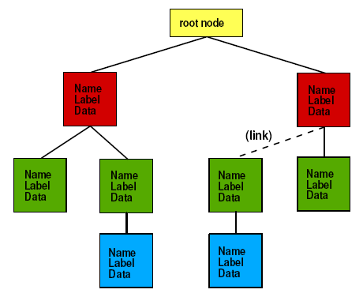
Makeup of CGNS
- Standard Interface Data Structures (SIDS) is the core of CGNS -
defines the intellectual content
- Defines what goes in the "boxes" and how they are organized
- Original low level implementation is Advanced Data Format (ADF)
- Basic direct I/O operations
- Software has no knowledge of data structure or contents
- Tree-based (nodal parent/child) structure
- Low level implementation is migrating toward HDF5 format
- HDF5 is already available as an option
- HDF5 is well-supported (NCSA), widely used, and has parallel
I/O capability
- This will be the official recommended format, although ADF
will also continue to be supported, and MLL will translate
between the two
- Mid-level library (MLL) is currently available for C and Fortran
- This is what most users employ
- Software has some knowledge of SIDS
- C++ and Python extensions also available
How CGNS works
- Users must download the CGNS software
- This includes ADF software (basic I/O operations in binary
format)
- Also includes MLL software (for ease of implementation)
- Users wishing to use HDF5 instead of ADF must download this
separately (MLL will work with either ADF or HDF5)
- Users are encouraged to use the MLL to read and write their data
(helps ensure CGNS-compatibility)
- Files are portable across computer platforms
- Tools (such as adfviewer) allow user to "see" what is in the CGNS
file
- Many commercial pre- and post-processing software support CGNS
format
Typical view of CGNS file using ADFviewer
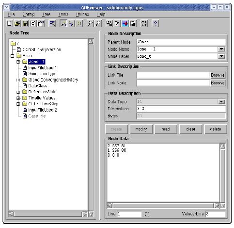
Typical CGNS file
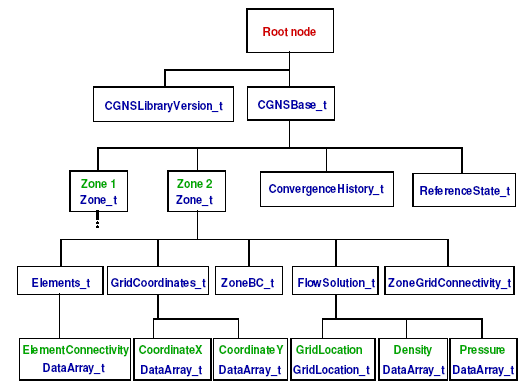
Cons and Pros
- Cons
- Although there are rules, there are also many options and a
certain amount of freedom
- Example: GridLocation = Vertex vs. CellCenter
- Example: data can be stored dimensional or nondimensional
- Example: optional use of Rind cells
- This flexibility places more responsibility on the CGNS reader
to figure out how to make use of what is in the file
- Attempted balance between too rigid and too flexible
- Pros
- As more people use it, more tools get developed to handle the
flexibility
- Can be as simple as storing only "grid + flow solution", or as
complex as storing everything needed to run/describe
a case
- Longevity and infinite extensibility
How CGNS can help you
- Improves longevity (archival quality) of data
- Self-descriptive (more on this later)
- Machine-independent
- Easy to share data files between sites
- Eliminates need to translate between different data formats
- Rigorous standard means less ambiguity about what the data
means
- Saves time and money
- For example, easy to set-up CFD runs because files include
grid coordinates, connectivity, and BC information
- Easily extendible to include additional types of data
- Solver-specific or user-specific data can easily be written
& read - file remains CGNS-compliant (others can still
read it!)
- Once defined & agreed upon, new data standards can be added
Status/where CGNS is headed
- Latest version is 2.4
- As of Aug 2005, the CGNSTalk mailing list had 161 participants from
21 different countries and at least 80 different organizations
- Over 11,000 CGNS downloads from SourceForge over last 3 years
(average of 408 per month over last 1 year)
- Many people have expressed interest in CGNS from outside of the
traditional aerodynamics community
- E.g., computational physiology, electromagnetics
- Parallel I/O (through HDF5) will be available soon
- CGNS is already in many widely-used commercial visualization
products, e.g., Tecplot, Fieldview, ICEM-CFD (reader for Paraview
being worked)
- Continuous process: approval and implementation of extensions for
handling new capabilities
Getting CGNS
- Go to http://www.cgns.org and follow instructions
- Or go directly to http://www.SourceForge.net
- You can get the official released version (currently 2.4), or
use CVS to keep up with the latest fixes
- E.g.: cgnslib_2.4-4.tar.gz (or cgnslib_2.4-4.zip for Windows)
- Follow instructions in README file to compile
- Also highly recommended (from same place):
- cgnstools (tools for viewing/editing)
- CGNS Users Guide (practical entry-level manual for getting
started with CGNS - includes simple source codes)
Basics of using CGNS
- Simple example: opening, closing, writing, & reading Base
- Aspects for data longevity
- Boundary conditions
- Convergence history
- Descriptor nodes
- Data & equation descriptions
- Flowfield variables
Opening/closing file & writing Base
- C
cg_open("grid.cgns", MODE_WRITE, &indexf);
basename="Base";
icelldim=3; /* dimensionality of cell (3 for volume cell) */
iphysdim=3; /* number of coordinates (3 for 3-D) */
cg_base_write(indexf, basename, icelldim, iphysdim, &indexb);
...
cg_close(indexf);
- Fortran
call cg_open_f('grid.cgns', MODE_WRITE, indexf, ier)
basename='Base'
icelldim=3
iphysdim=3
call cg_base_write_f(indexf, basename, icelldim, iphysdim, indexb, ier)
...
call cg_close_f(indexf, ierr)
What the file looks like ...
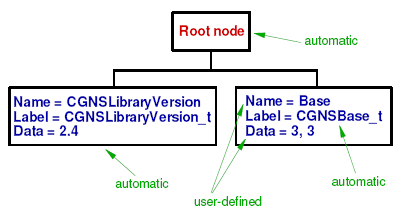
Notes: icelldim = dimensionality of cell (2 for face, 3 for volume),
iphysdim = no. of coordinates required to define a node position (1 for
1-D, 2 for 2-D, 3 for 3-D)
What the file looks like in adfviewer ...
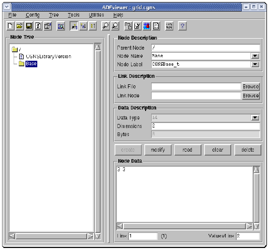
Reading the Base
- C
cg_open('grid.cgns', MODE_READ, &indexf);
cg_nbases(indexf, &nbases);
for (i=1; i <= nbases; i++)
{cg_base_read(indexf, i, basename, &icelldim, &iphysdim);}
cg_close(indexf);
- Fortran
call cg_open_f('grid.cgns', MODE_READ, indexf, ier)
call cg_nbases_f(indexf, nbases, ier)
do i=1,nbases
call cg_base_read_f(indexf, i, basename, icelldim, iphysdim, ier)
enddo
call cg_close_f(indexf, ier)
Aspects for data longevity
boundary conditions
- BCs are included in the CGNS file
- Including BCs makes it easier for someone else to duplicate the
same flow conditions
- Eliminates doubt as to how the solution was run, when later looking
at the file
- BCs can be simple or have high level of detail
- Minimum: list of points and their BC type (name)
- Can also include Dirichlet or Neumann-type data

convergence history
- GlobalConvergenceHistory tracks history of residual(s), forces,
moments, etc.
- Part of a complete record of the flow solution, easily readable by
others

descriptor nodes
- Allow user to add notes, descriptions, important factors associated
with the particular run, etc.
- As part of the permanent record, descriptor nodes make the file
potentially more useful/meaningful in the future
- Full inclusion of flow solver input deck(s) is particularly useful
- Eliminates doubt as to how the solution was run, when later looking
at the file
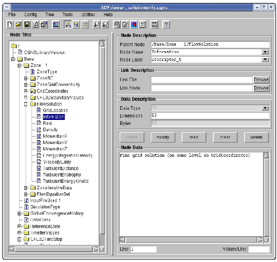
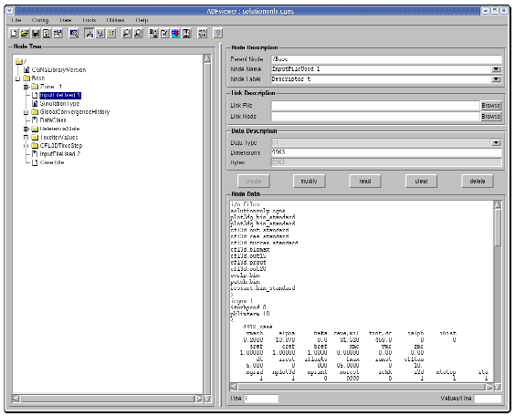
data & equation descriptions
- Documents the dimensionality & units (or normalization) of the
data
- Reference state and flow solution method become part of permanent
record
- Eliminates doubt as to what the variables represent and how the
solution was run, when later looking at the fileo

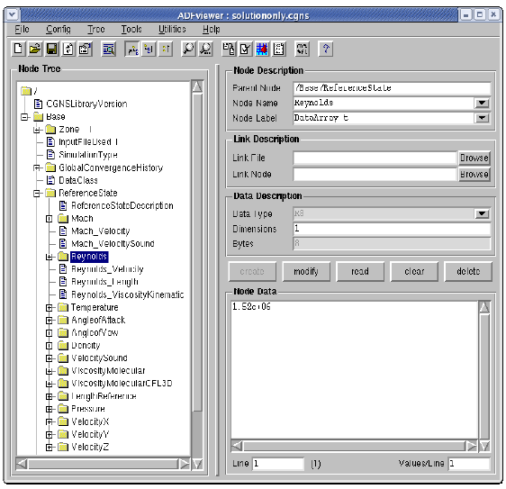
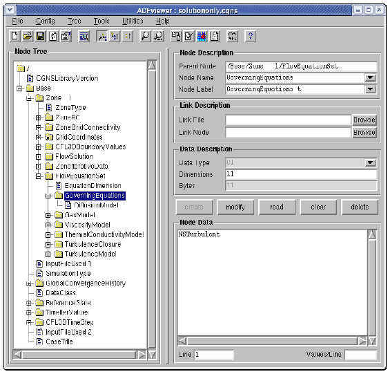
flowfield variables
- As many flowfield variables as desired can be stored; for example:
- Conserved and/or primitive variables
- Plus all turbulence quantities, eddy viscosity, distance
functions, species mass fractions, or other flowfield
quantities of interest
- Eliminates having to go back and restart or reconstruct when you
want to obtain nonstandard quantities
Some final comments
- A CGNS file can be as full or as sparse as you want to make it
- The fuller it is, the more complete and archival the file
- Always easy to read only the parts you want
- Easy to build CGNS into existing processes
- Start by writing only the "basic" elements of CGNS file
(e.g., grid, flow solution, connectivity, and BCs) as a
postprocessing file for flow visualization
- Gradually add to completeness of file
- Eventually, CGNS file can replace your restart file, if
desired
Conclusions
- CGNS is a well-established, stable format with worldwide
acceptance, use, and support
- Provides seamless communication of data between applications,
sites, and system architectures
- Supported by many commercial visualization and CFD vendors
- Extensible and flexible - easily adapted to other fields of
computational physics through specification in the SIDS
- Backward compatible with previous versions; forward compatible
within major release numbers
- Allows new software development to focus on important matters,
rather than on time-consuming data I/O, storage, and compatibility
issues
- CGNS is the best thing since sliced bread!
Auxiliary slides
Writing structured grids
double x[kdim][kdim][idim], y[kdim][jdim][idim], z[kdim][jdim][idim];
int isize[3][3];
strcpy(zonename,"Zone 1");
/* vertex size (structured grid example) */
isize[0][0]=idim;
isize[0][1]=jdim;
isize[0][2]=kdim;
/* cell size (structured grid example) */
isize[1][0]=isize[0][0]-1;
isize[1][1]=isize[0][1]-1;
isize[1][2]=isize[0][2]-1;
/* boundary vertex size (always zero for structured) */
isize[2][0]=0;
isize[2][1]=0;
isize[2][2]=0;
/* create zone */
cg_zone_write(indexf, indexb, zonename, isize[0], Structured, &indexz);
/* write grid coordinates */
cg_coord_write(indexf, indexb, indexz, RealDouble, "CoordinateX", x, &indexcx);
cg_coord_write(indexf, indexb, indexz, RealDouble, "CoordinateY", y, &indexcy);
cg_coord_write(indexf, indexb, indexz, RealDouble, "CoordinateZ", z, &indexcz);
What the file looks like ...

What the file looks like in adfviewer ...

Writing unstructured grids
/* this is an example for HEXA_8 (cube-like) elements
double x[maxnodes], y[maxnodes], z[maxnodes];
int isize[3], ielem[maxelem][8];
strcpy(zonename,"Zone 1");
/* vertex size (unstructured grid example) */
isize[0]=inodedim;
/* cell size (unstructured grid example) */
isize[1]=icelldim;
/* boundary vertex size (zero if elements not sorted) */
isize[2]=ivbdy;
/* create zone */
cg_zone_write(indexf, indexb, zonename, isize, Unstructured, &indexz);
/* write grid coordinates */
cg_coord_write(indexf, indexb, indexz, RealDouble, "CoordinateX", x, &indexcx);
cg_coord_write(indexf, indexb, indexz, RealDouble, "CoordinateY", y, &indexcy);
cg_coord_write(indexf, indexb, indexz, RealDouble, "CoordinateZ", z, &indexcz);
/* write element connectivity */
cg_section_write(indexf, indexb, indexz, "Elem", HEXA_8, nelem_start, nelem_end,
nbdyelem, ielem[0], &indexe);
Element connectivity for HEXA_8
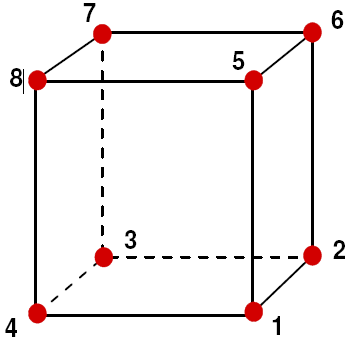
What the file looks like ... (below Base)

What the file looks like in adfviewer ...
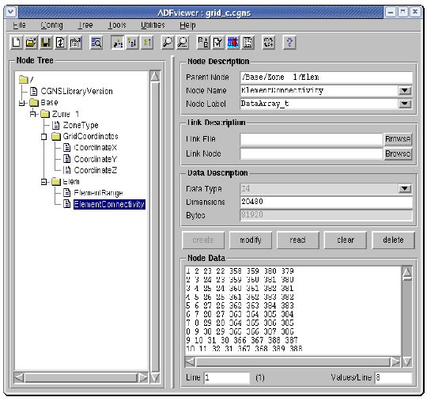